Essa não é exatamente a nossa história, mas a história que precisou existir para que a nossa pudesse acontecer.
Foi um caminho cheio de dúvidas (sobre algo que, no fundo, eu já sabia, mas demorei para ter coragem de acreditar), descobertas e, acima de tudo, muito amor.
Eu diria que a nossa história é digna daqueles romances "friends to lovers", com um slow burn lindo de acompanhar. Enquanto nós dois insistíamos em negar o que sentíamos, nossa química se exibia de um jeito tão óbvio que, ironicamente, éramos os únicos que pareciam não perceber.
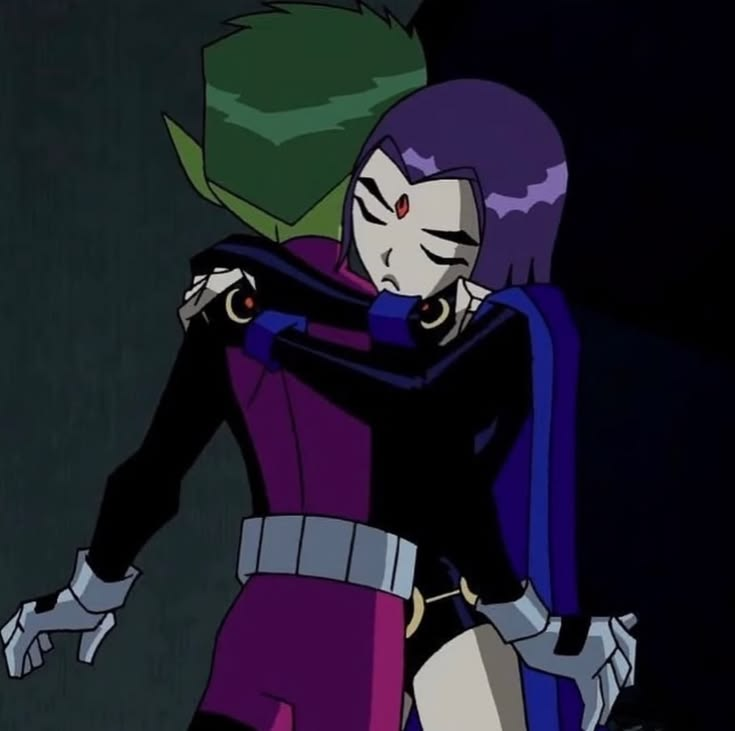
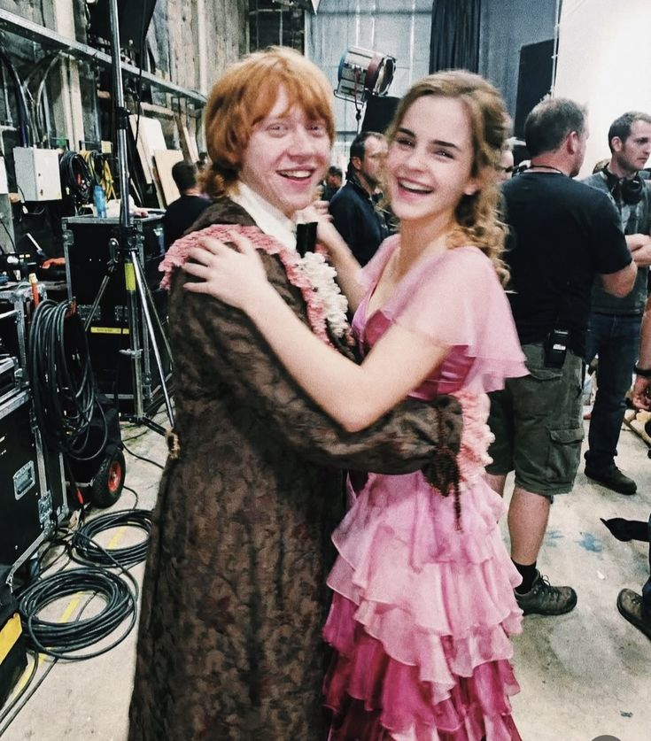
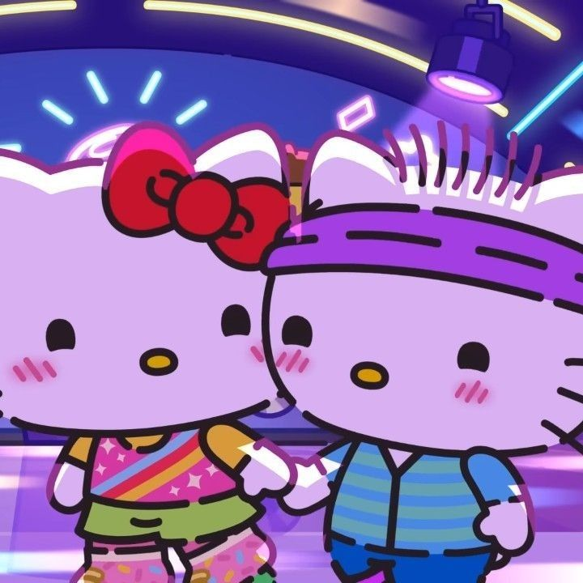
Antes de você chegar, eu estava muito nervosa com a transição social que haveria de passar. Ir para o ensino médio era algo que eu almejava desde pequena, mas também tinha muito medo de não me adaptar e não fazer amigos, já que sempre fui tímida e reservada. Era uma mistura de medo e expectativas.
Como eu era romântica desde aquela época, também idealizava a ideia de encontrar alguém no ensino médio — o que aconteceu, mas da forma mais inesperada.
Eu era insegura, tímida e reservada, mas com um coração gigante que estava aberto para novas experiências.
Eu só não imaginava que, entre tantas pessoas que conheceria naquele ano que estava por vir, uma delas mudaria completamente a minha vida.
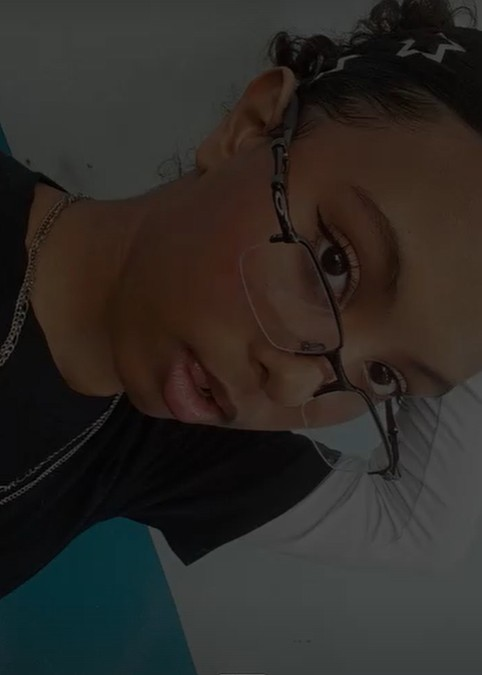
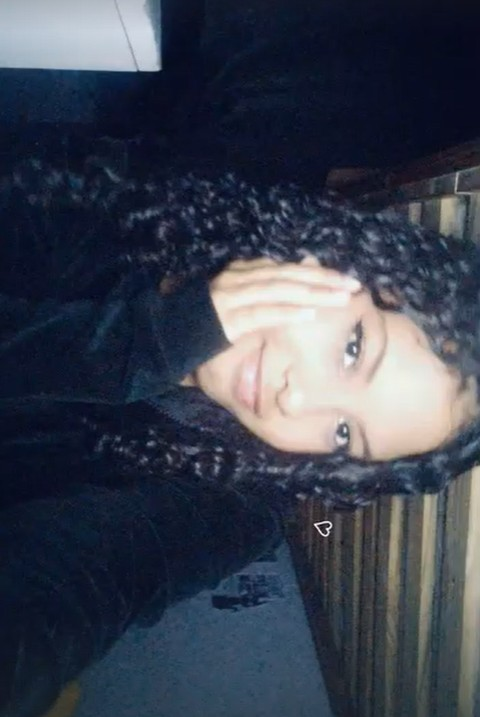
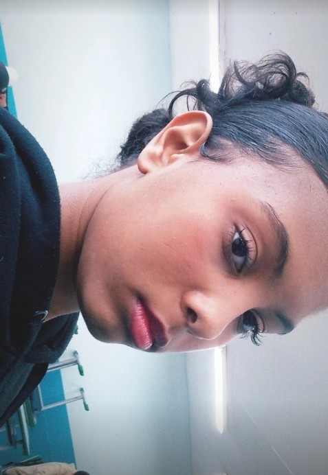
A partir da primeira vez que te vi, passei a lembrar de você como "o menino que derrubou o PC da escola". Confesso que essa foi a primeira imagem que ficou na minha cabeça, mas, com o tempo, isso acabou ficando para trás.
Nossa primeira conversa aconteceu quando eu estava junto com a minha amiga e você com o seu amigo, durante o intervalo, na época em que estavam entregando os uniformes da escola. Depois disso, nós duas passamos boa parte da aula no laboratório conversando sobre você e o seu amigo.
Algum tempo depois, quando descobri que você estava gostando da minha amiga, comecei a te observar mais pensando em ajudar vocês a ficarem juntos. Mas, através das nossas pequenas conversas — e das vezes em que você invadia a minha sala — fui conhecendo o coração tão puro e bonito que você tinha.
Hoje, olhando para tudo isso, fico extremamente feliz por ter tido a oportunidade de conhecer você por completo.
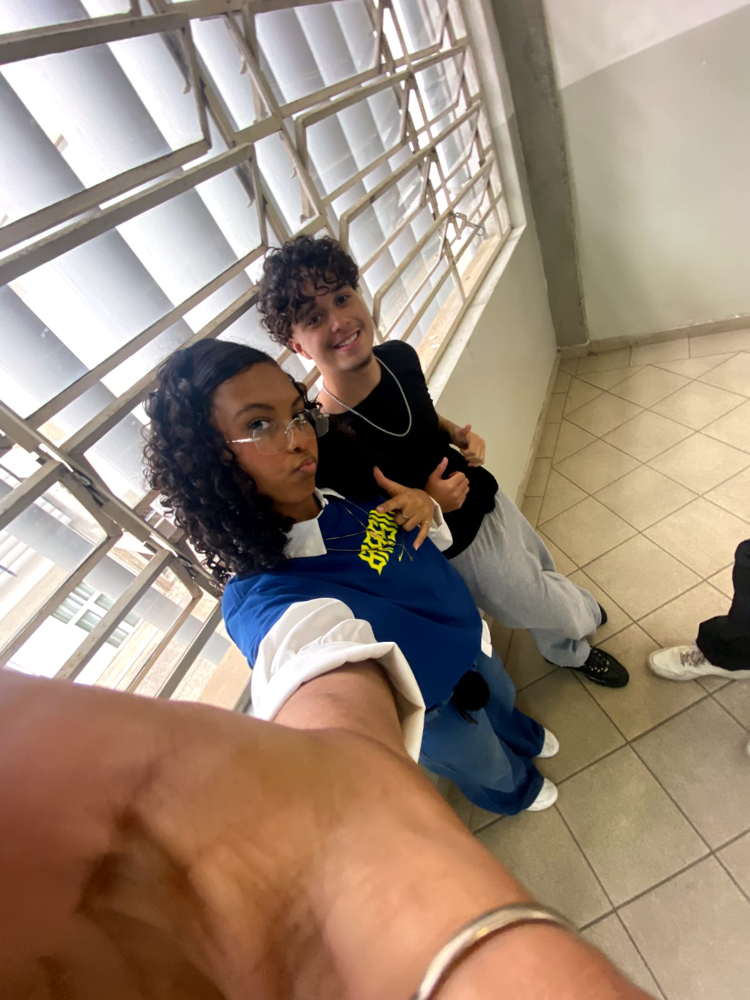
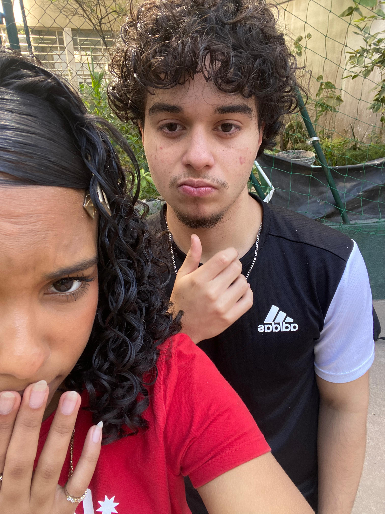
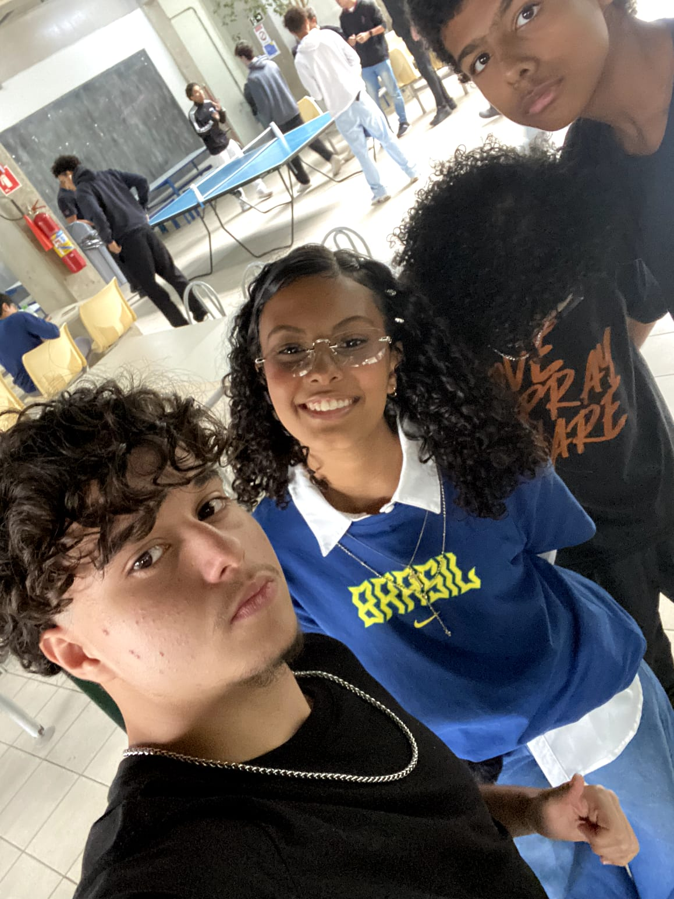
Em menos de um mês, estávamos muito próximos. Pela primeira vez naquela escola, eu havia me encontrado em alguém de verdade. Nossos problemas eram parecidos naquela época, assim como nossos pensamentos (principalmente sobre o amor). Acho que isso foi essencial para nos darmos tão bem logo de início.
Você passou a ser minha maior companhia dentro e fora da escola, a pessoa com quem eu falava sobre todos os meus problemas e segredos e, certamente, o único que teria paciência para me ouvir. Eu passei a te esperar todos os dias na escola e, nas poucas vezes em que você faltava, os dias pareciam os mais chatos e demorados de passar.
Eu sempre olhava a grade da sua turma para perguntar se dava para você sair da sala e a gente se encontrar no bebedouro para conversar. Não é à toa que, ano passado, eu bebia muito mais água do que hoje habitualmente na escola. Sempre que tinha a chance de passar pela sua sala durante as aulas, fazia questão de me esforçar pelo menos um pouquinho para te procurar.
Nossa amizade foi a experiência mais profunda que já tive com qualquer pessoa na vida. Como, em apenas três meses de amizade com um MENINO (sim, um menino KKKKK), eu conseguia sentir tanta conexão e tanto amor (aqui, ainda fraterno) por alguém que havia conhecido há tão pouco tempo? Nem eu entendia... só sentia mesmo.
Ao longo desses três primeiros meses de amizade, muita coisa aconteceu e passou pela minha cabeça ao mesmo tempo. Às vezes, você me tratava tão bem que eu só conseguia pensar: "MEU DEUS, EU QUERO NAMORAR ESSE MENINO!" ou "Ele tem alguma intenção comigo, não é possível... ele me trata tão bem...". Além disso, muitos outros pensamentos parecidos também passavam pela minha cabeça.
O mais engraçado de tudo isso é que você nunca fez nada de extraordinário. Você apenas fazia muito bem o ordinário — e isso eu sempre reparei.
Mas eu já havia me acostumado a aceitar migalhas de atenção. Então, ao perceber que com você tudo parecia tão diferente, no auge da carência depois uma decepção, era claro que eu acabaria pensando esse tipo de coisa. Por isso, sempre fazia questão de deixar esses pensamentos de lado. A questão é que, por mais que eu tentasse ignorá-los, eles nunca deixaram completamente a minha mente durante toda a nossa amizade.
Não me lembro ao certo quando dissemos o primeiro "eu te amo" um para o outro, mas uma coisa de que certamente me lembro é do quanto eu ficava tímida para te dizer isso no início.
Eu amava a forma como tudo naquela escola ficava mais legal e engraçado com você. Todos os momentos, sem exceção. As vezes em que a gente se segurava para não rir de alguém caindo na escada, as vezes em que eu te zoava por conta dos trotes (o mais legal foi o da troca de gênero, porque eu ajudei rs), as vezes em que davam alguma coisa diferente para comer no intervalo e a gente saía correndo para pegar.
Vivemos muitas coisas, mas tenho certeza de que tudo só foi tão incrível quanto foi porque eu estava ao seu lado.
Como eu já disse outras vezes, eu aprendi a ser amada com você. Isso fez com que eu também aprendesse a me amar mais e, consequentemente, pudesse estar ainda mais disposta a te amar.
Com você, eu sabia que podia ser eu mesma. Não precisava esconder partes de mim, como faço com as outras pessoas. Você foi a exceção. Os outros conhecem a Luísa inteligente e estilosa, mas você conhece até as versões mais vulneráveis de mim.
Em meio a tanta coisa ruim que aconteceu naquele ano, o desenvolvimento da nossa amizade foi, sem dúvida, a lembrança mais bonita que guardo do meu primeiro ano no ensino médio.
Naquela época, eu ainda insistia em chamar tudo aquilo de amizade. Era muito mais fácil acreditar nisso do que admitir o que o meu coração já vinha tentando me contar havia algum tempo.
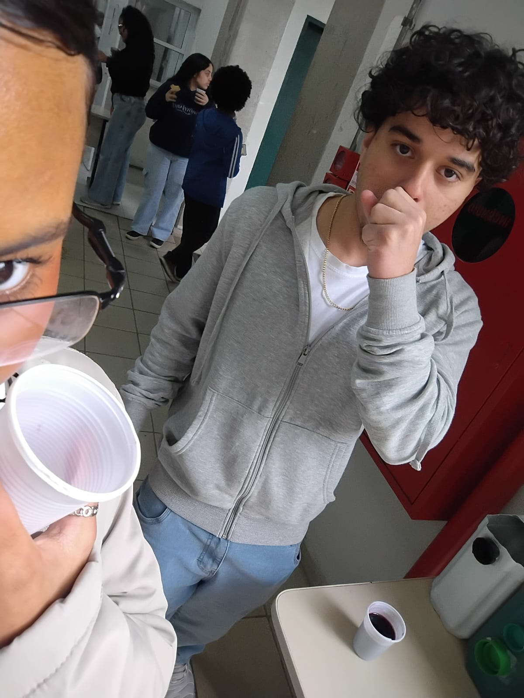
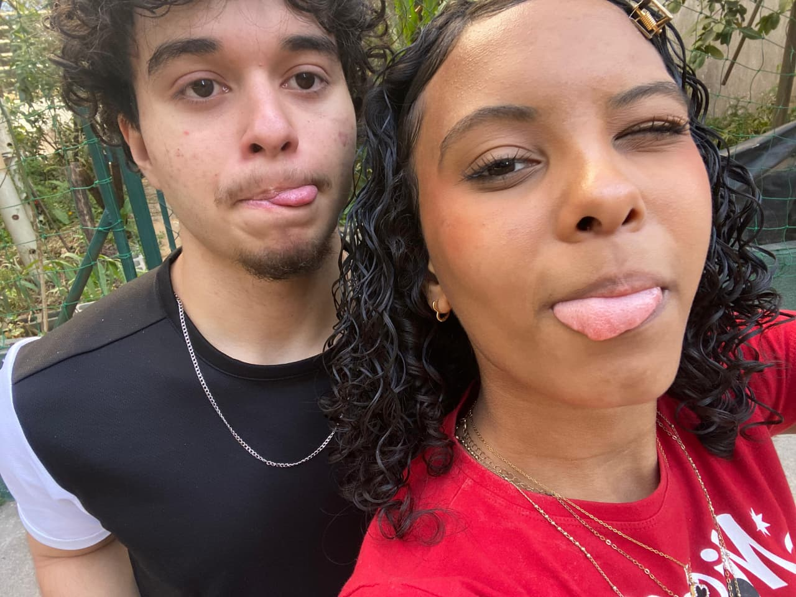
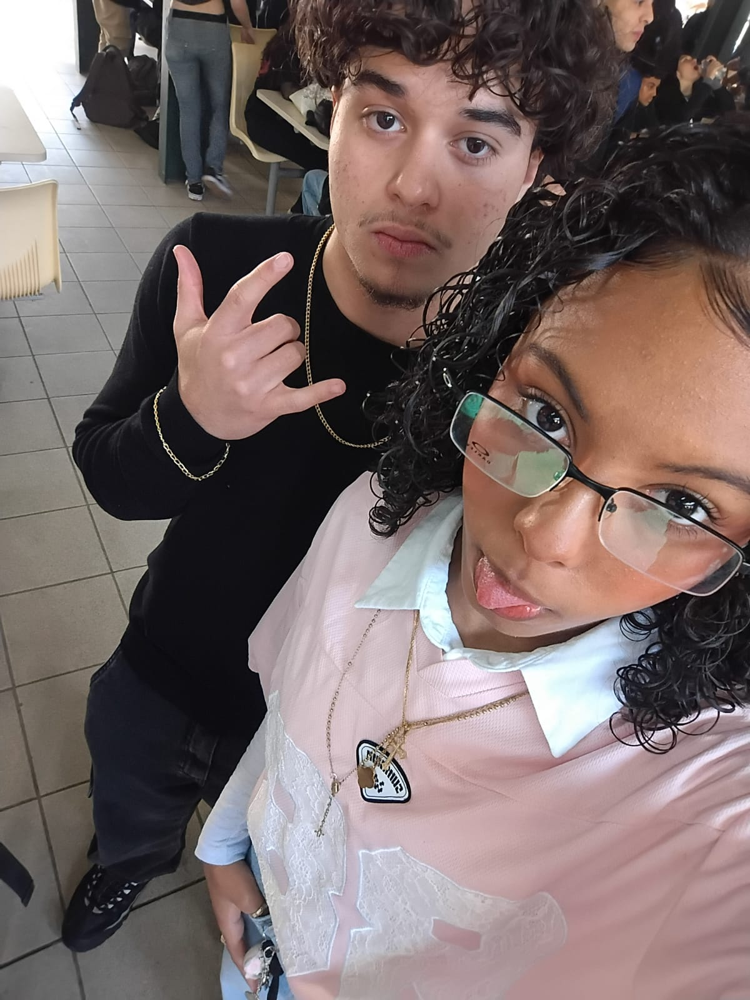
Como eu já havia dito anteriormente, pensamentos relacionados a namorar você nunca foram novidade na minha cabeça. Todo mundo falava sobre nós dois, meu próprio coração dava sinais, mas eu preferia negar. Até que chegou um momento em que até a minha mente passou a contrariar tudo aquilo que eu dizia com tanta convicção sobre sermos apenas amigos.
Minha ficha caiu de uma forma extremamente gradual, quase imperceptível. Talvez seja justamente por isso que esse tenha sido o capítulo mais difícil de escrever de todo este texto. O mais cômico é que, por mais que eu percebesse os possíveis indícios de estar gostando de você, eu só pensava: "Não... ele é só meu amigo. Tô de boa". No final das contas, acho que foi muito bom eu ter passado por essa fase. Afinal, eu não estava nada preparada para tentar começar um relacionamento novamente, então talvez minha cabeça estivesse apenas respeitando o tempo de que meu coração ainda precisava.
Na época em que estava te ajudando a arrumar alguma menina, eu reparava na forma como você tratava as garotas com quem tentava alguma coisa: você era carinhoso, engraçado, companheiro e respeitoso. Eu admirava a forma como você tratava as pessoas. E a forma como me tratava — sendo apenas sua amiga e, até então, sem nenhum sentimento envolvido — era muito parecida, o que me fez imaginar que você seria um ótimo namorado. Minha cabeça me fazia pensar: "Ele seria um bom namorado, mas não para você", mesmo que, no fundo, eu quisesse que fosse para mim.
De forma natural, eu comecei a reparar mais no seu cabelo, nas suas roupas, no seu cheiro e no seu rosto. Até que chegou o momento em que passei a reparar nos seus lábios. Quando isso aconteceu pela primeira vez, pensei:
"Ah, é normal reparar na boca das pessoas, só tô olhando."
Mas daí aconteceu de novo. E de novo. E de novo.
O olhar já não era mais apenas curiosidade; eu passei a desejar te beijar. Mas nunca fiz isso naquele
momento. Eu tinha medo de bagunçar tudo entre nós, estragar a amizade e acabar te afastando de mim.
Nesse ponto, eu não poderia te perder. Mesmo sabendo que provavelmente isso não aconteceria, eu tinha
medo de estragar tudo.
Foi aí que percebi que realmente havia alguma coisa acontecendo.
Porque, convenhamos, não é muito normal querer beijar o seu melhor amigo.
E, olhando para trás, percebo que tudo sempre esteve nos detalhes.
Quando você tinha a oportunidade de mexer no meu cabelo — principalmente quando eu estava morrendo de
sono —, eu prestava atenção em cada toque seu até acabar dormindo. Eu achava muito bonitinho quando você
mandava vídeos brincando com suas primas pequenas, tanto que assistia aos vídeos pelo menos duas vezes.
Também ficava extremamente feliz com os seus elogios discretos, principalmente quando eu estava triste
ou quando, segundo você, eu estava "merecendo", e então você me chamava de "minha princesinha".
Na época, eu ainda fingia que tudo isso não significava nada.
Hoje eu vejo que significava absolutamente tudo.
Tudo isso acabou ficando ainda mais evidente no último dia de aula. Foi a primeira vez que eu realmente senti o peso da ideia de não te ver todos os dias. Eu não queria ter que me adaptar de novo; eu só queria estar confortável com você. Enquanto estive ao seu lado, aproveitei o máximo que pude, mas, quando cheguei em casa, permaneci melancólica pelo resto do dia e quase chorei de novo umas três vezes KKKKKKK. Até algum tempo atrás, neste ano, ainda estava sendo difícil lidar com isso, mas agora já aceitei. Mas acho que aquela saudade foi uma das maiores provas de que aquilo já não era apenas amizade.
No fundo, eu já sabia exatamente o que estava sentindo. Porque, por mais difícil que fosse admitir para mim mesma, era muito menos assustador esconder aquele sentimento do que correr o risco de perder a pessoa mais importante que eu tinha na minha vida.
Eu só precisava de mais um pouco de coragem. Só que eu ainda não sabia que você também precisava.
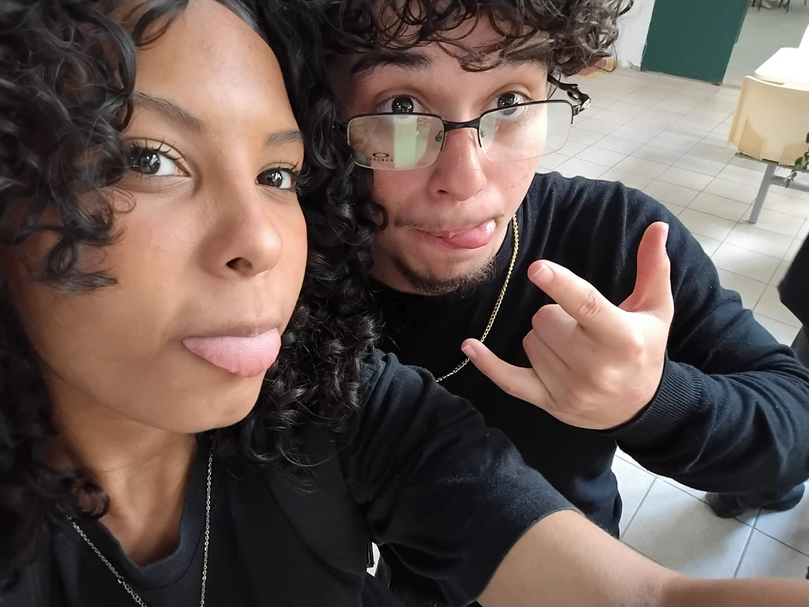
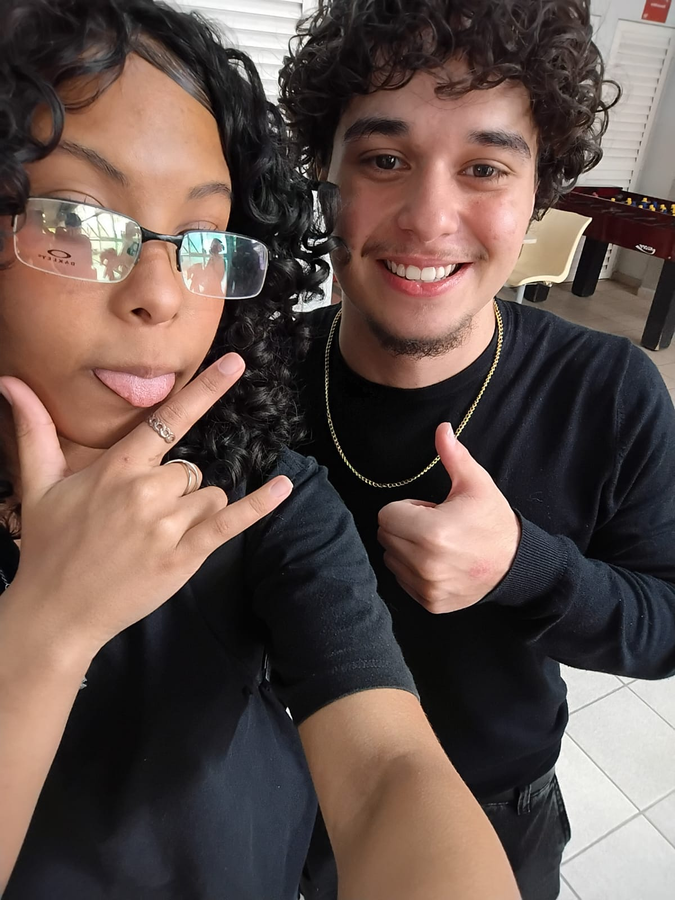
Antes de descobrir que você também me amava, houve uma fase em que eu comecei a perceber que você era um amigo bom demais para ser apenas um amigo.
A primeira coisa que me fez pensar isso foi o carinho e o respeito que você teve por mim desde o começo. Sempre admirei isso em você, mas, com o passar do tempo, percebi que o carinho que você tinha comigo não era uma coisa qualquer. Você gostava de estar próximo e fazia questão de me ter por perto também. Foi aí que comecei a me perguntar se aquilo realmente era só amizade.
Por certo tempo, você passou a fazer questão dos meus "eu te amo" antes de dormir, o que é um tanto quanto peculiar para dois amigos. Naquela época, eu não fazia tanta questão quanto você, mas, no fundo, eu gostava de perceber que você fazia questão de ouvir aquilo antes de dormir. Era um detalhe pequeno, mas que me fazia sentir importante.
Chegando um pouco mais para o final do ano passado, lembro de quando começamos a assumir um para o outro os momentos em que nos achávamos "beijáveis". Olhando para isso hoje em dia, é bem engraçado recordar dessa fase, que também me faz lembrar da época em que você começou a me chamar por apelidos carinhosos (e vice-versa), como o "minha princesinha", que eu nunca vou esquecer.
Outra coisa que me fez pensar se você realmente me queria apenas como amiga era o fato de você curtir tudo o que eu postava nas redes sociais. Tudo. ABSOLUTAMENTE TUDO. Convenhamos que isso não é muito comum na nossa geração. Mas eu simplesmente relevei e deixei isso de lado com o tempo.
Acho que gostávamos um do outro há mais tempo do que realmente pensamos. Antes mesmo de nós, nossos corações já tinham começado essa história.
O dia em que confessei meus sentimentos para você ainda está tão fresco na minha memória — acredito que na sua também. Eu queria ter contado antes, mas, como já mencionei no texto, queria ter certeza daquilo que sentia. Então guardei tudo para mim por um pouquinho menos de um mês. Era uma mistura de medo, expectativa de que fosse recíproco e o alívio por finalmente revelar algo que eu não aguentava mais esconder.
E, quando você disse que sentia o mesmo, eu podia sentir meu coração palpitar de tanta felicidade. Minhas bochechas doíam de tanto sorrir. Demorei alguns segundos para acreditar que aquilo realmente estava acontecendo. Eu me revirava na cama várias e várias vezes, relendo nossas mensagens e nossa confissão de amor. Aquele momento reacendeu meu coração, que andava tão triste nas semanas anteriores. Descobrir que você me amava me fez esquecer tudo de ruim que vinha me afetando. A felicidade era tanta que parecia até um sonho. Naquele momento, todos aqueles pequenos sinais que eu insistia em ignorar finalmente se encaixaram. Eram quatro horas da manhã quando boa parte da minha vida mudou — e, sem dúvida alguma, mudou para melhor.
Hoje já estamos há alguns meses vivendo aquilo que, por tanto tempo, eu só tive coragem de imaginar. Naquela madrugada, eu descobri que o amor da minha vida também me amava. E hoje, depois de tudo o que vivemos desde então, continuo desejando exatamente a mesma coisa: que seja você quem eu encontre em todos os meus aniversários, em todas as manhãs e, quem sabe, em todos os capítulos que ainda faltam ser escritos na minha vida.
Existem memórias que guardamos porque foram importantes. Outras, porque foram engraçadas. Mas existem outras que simplesmente tomam todo o nosso coração. Às vezes, elas são tão pequenas que talvez ninguém de fora entendesse por que significam tanto, mas bastam alguns segundos para fazer meu coração voltar exatamente para aquele dia.
Acho que é por isso que dizem que amar alguém e ter momentos memoráveis com ela é colecionar pequenas eternidades.
Se eu pudesse guardar apenas quatro lembranças para reviver pelo resto da vida, acho que seriam estas.
Cartinha do EJC — Na minha inscrição do EJC, eu tinha contado que tinha dois melhores amigos (você e a Monique, minha amiga da outra escola). Eu não sabia para que estavam me perguntando isso, mas sentia que podia confiar em vocês para qualquer coisa que pudessem propor. Talvez eu estivesse errada, já que pude contar apenas com você, mas isso foi o suficiente para me fazer esquecer a "decepção" que tive por não receber a cartinha da minha amiga. Na primeira vez que li, eu chorei muito, mas foi um choro muito bom. Eu estava me sentindo muito amada. Se eu for ler novamente (por algum motivo, não tive coragem até hoje), tenho certeza de que vou sentir como se fosse a primeira vez. Lembro que você disse que essa foto era a sua favorita, e por isso pediu para a moça da igreja imprimir na cartinha.
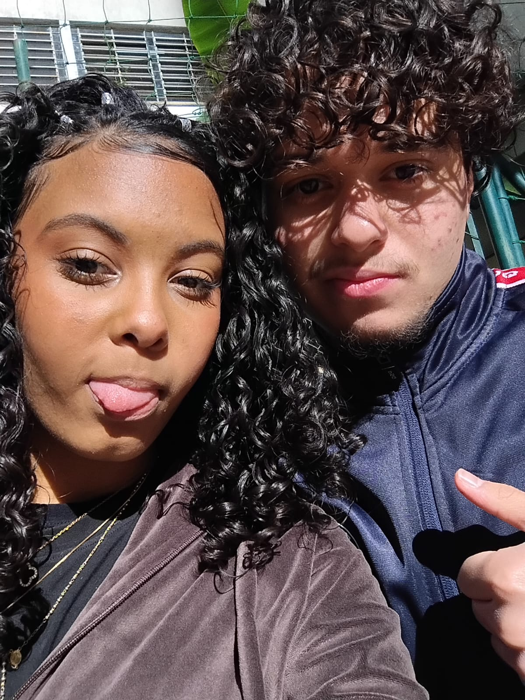
Primeiro Beijo — Certamente uma das coisas que mais alegrou o começo do meu ano. Foi um momento extremamente improvisado, mas inesquecível na mesma proporção. Ninguém além de nós e das estrelas pode relembrar esse dia tão mágico.
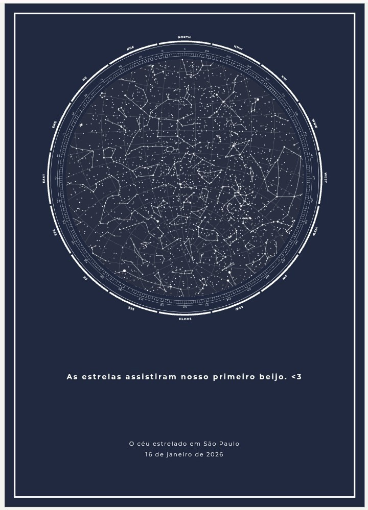
Meu Aniversário — Foi a primeira vez que a gente conseguiu combinar de sair juntos, depois de quase um mês nos encontrando na frente da escola, antes do horário de aula, duas vezes por semana. Foi um dia incrível, ainda mais porque o dia do meu aniversário em si não tinha sido muito especial para mim. Você conseguiu mudar tudo isso. Eu estava genuinamente feliz e, como você sabe, durmo com a Hello Kitty de pelúcia que você me deu todos os dias até hoje.
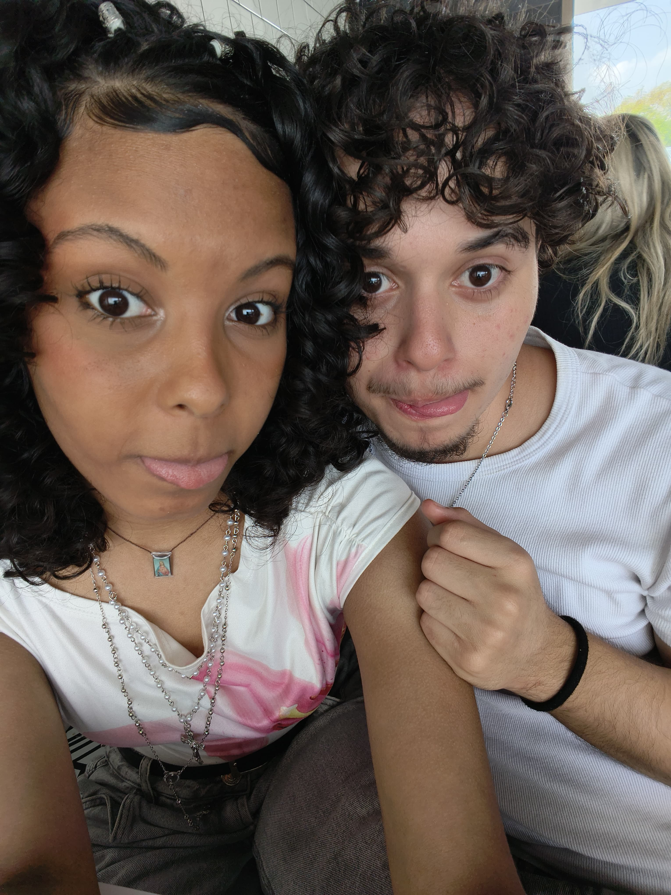
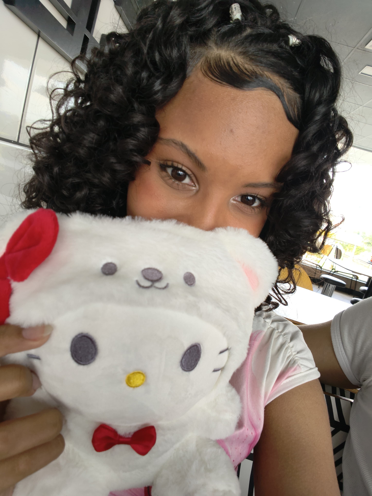
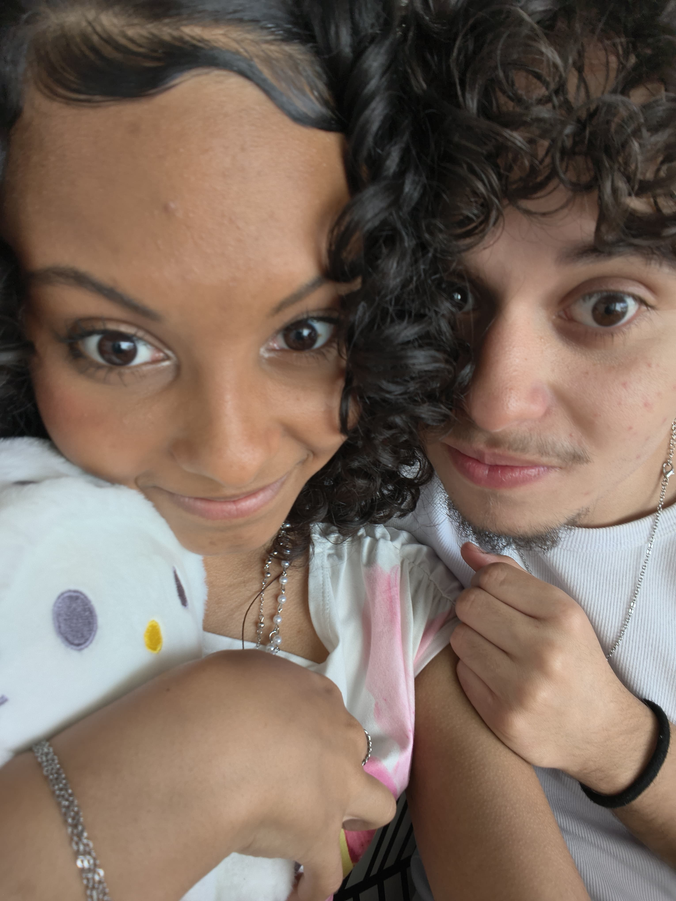
Nosso Primeiro Dia dos Namorados — Durante muito tempo, eu imaginei como seria passar um Dia dos Namorados ao lado de alguém que realmente me amasse. Nunca imaginei que seria tão tranquilo, tão leve e tão feliz. Foi um daqueles dias em que eu pensei: "É isso. Era exatamente isso que eu estava procurando esse tempo todo." Certamente, um dos melhores dias do ano inteirinho.
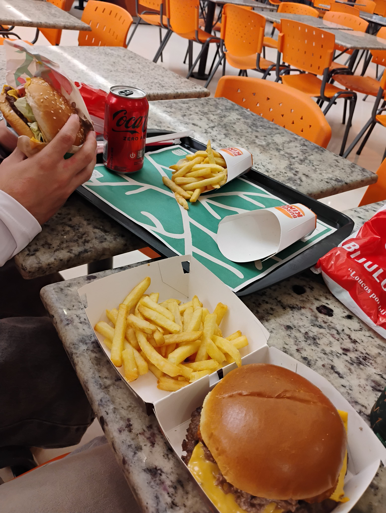
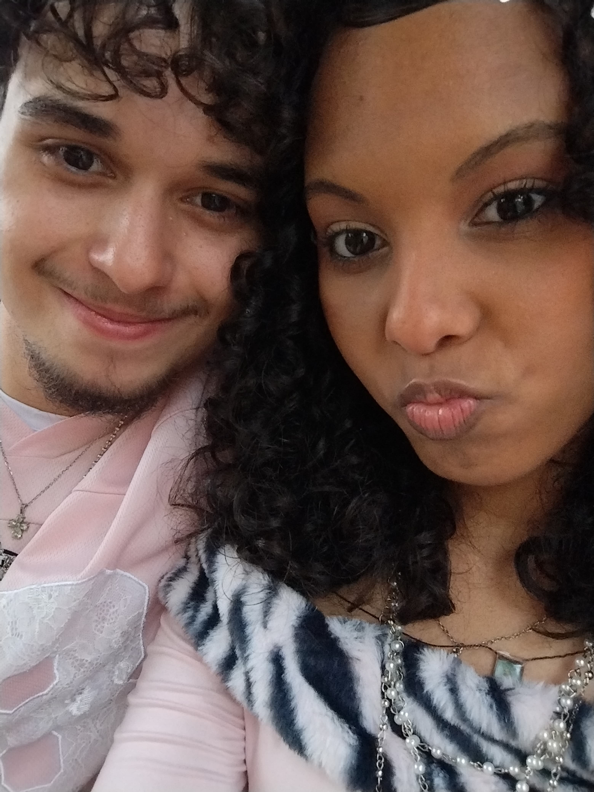
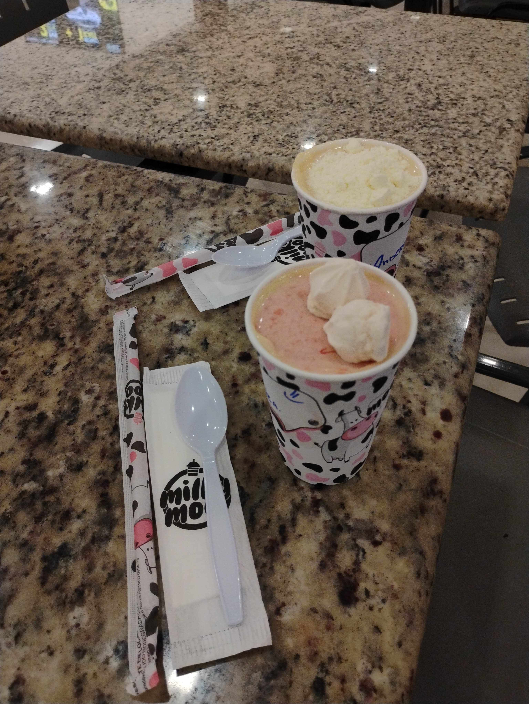
Depois de escrever tudo isso, percebi que, na verdade, essa também é a nossa história. Porque foi exatamente esse caminho que nos trouxe até aqui. Ao longo desse um ano e quase quatro meses em que somos amigos (e, agora, felizmente, namorados), você se tornou minha paz, meu porto seguro, a minha maior conexão, o meu lugar e a minha pessoa favorita.
Você curou coisas que nem foi você quem machucou, transformou a minha ideia de amor e me mostrou que o amor de verdade é aquele que traz paz e conforto para a alma, e não a adrenalina de não saber o dia de amanhã. Hoje eu não tenho mais medo de amar. Hoje eu não tenho mais medo de imaginar um futuro. Hoje eu sei como é ser tratada com respeito. Hoje eu sei como é me sentir suficiente.
Ainda bem que, na minha cabeça, naquela época, você era extremamente próximo dele. Ainda bem que eu resolvi beber tanta água naquele primeiro ano. Quem diria que tantos encontros "por acaso" no bebedouro mudariam completamente a minha vida? E pensar nisso hoje só me faz agradecer por ter você na minha vida.
Como já disse outras vezes, eu desejo que você nunca perca esse coração admirável. Desejo que a vida seja generosa com você, que sempre foi tão generoso comigo. Desejo que você continue acreditando em você da mesma forma que eu acredito. Você merece as coisas mais preciosas que a vida pode conceder a alguém.
Obrigada por existir, por ser você. Obrigada por ser o capítulo mais bonito da minha vida até agora. Obrigada por todos os dias em que você escolheu ficar. Obrigada por todas as conversas, por todos os abraços, pelas risadas, pelos conselhos, pela paciência e por fazer do amor um lugar onde eu finalmente me sinto em casa.
Feliz aniversário, meu bem. Que a gente nunca pare de escrever capítulos juntos.
Eu te amo.
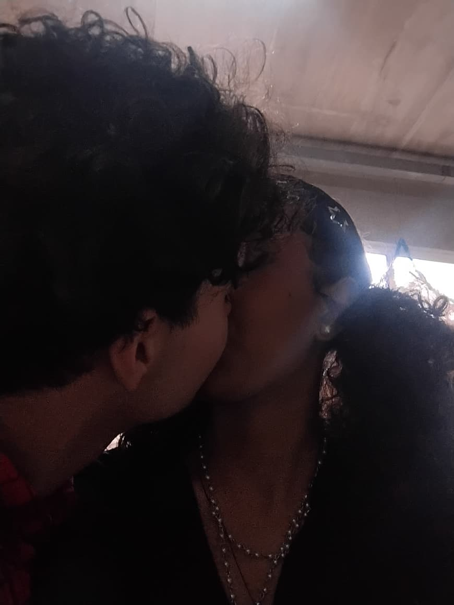
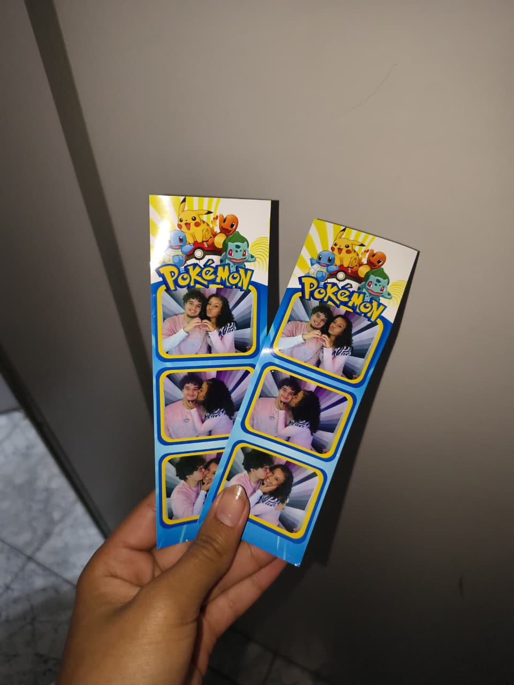
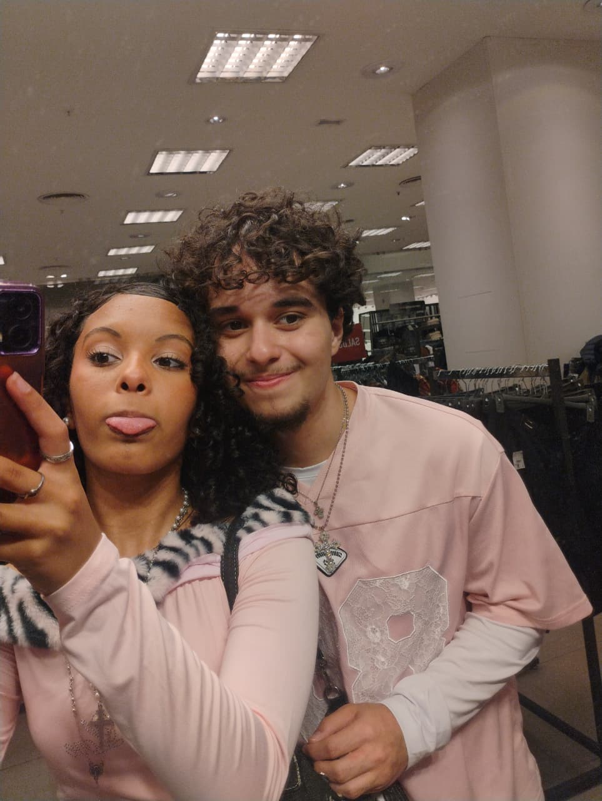